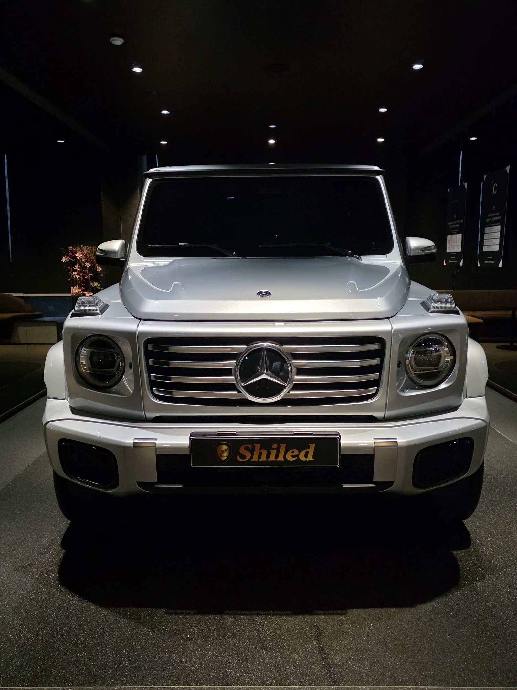
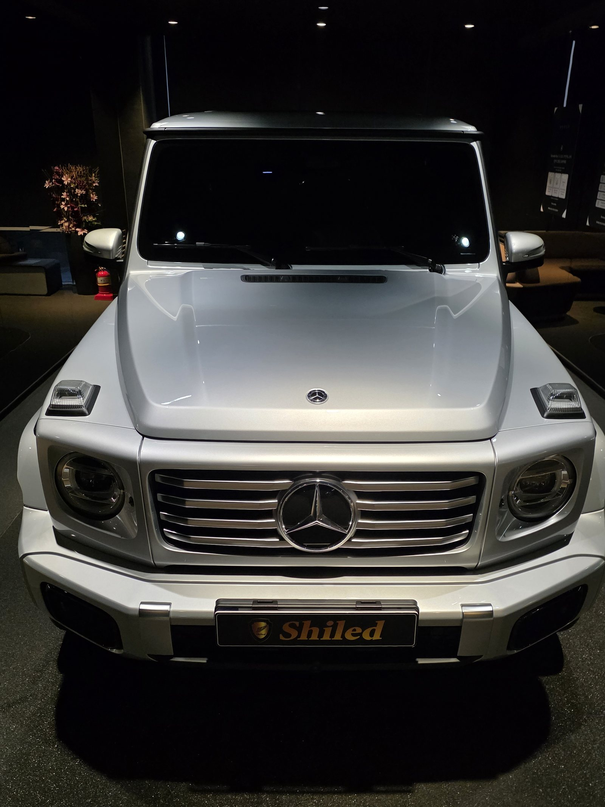
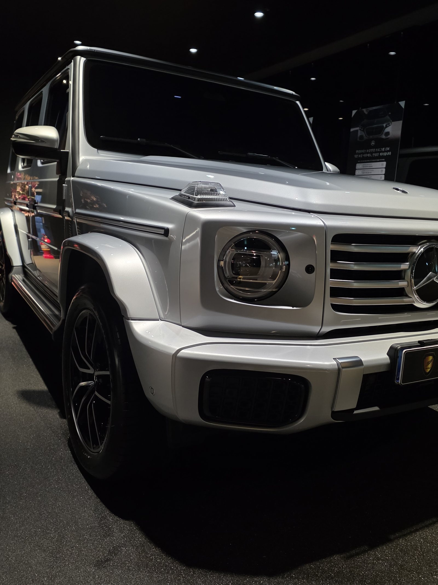
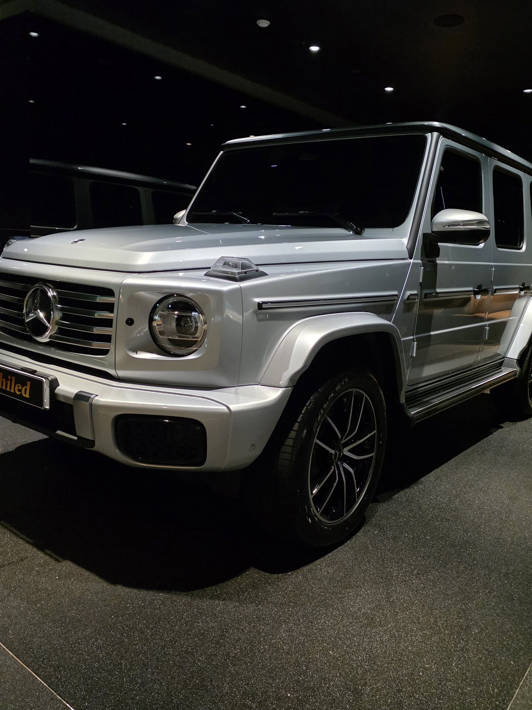
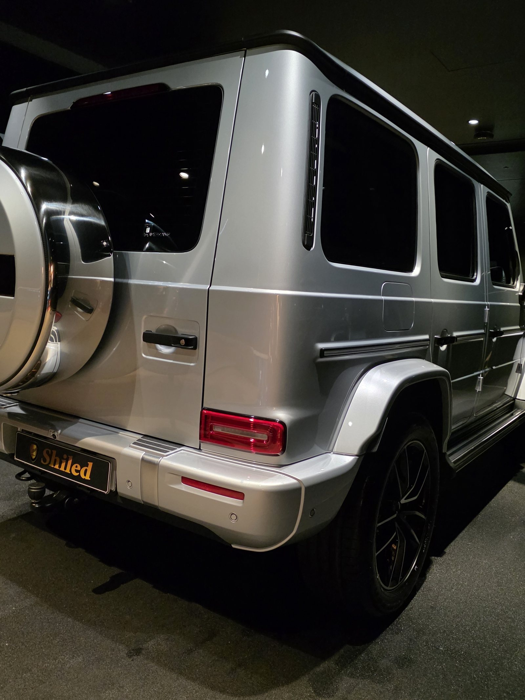
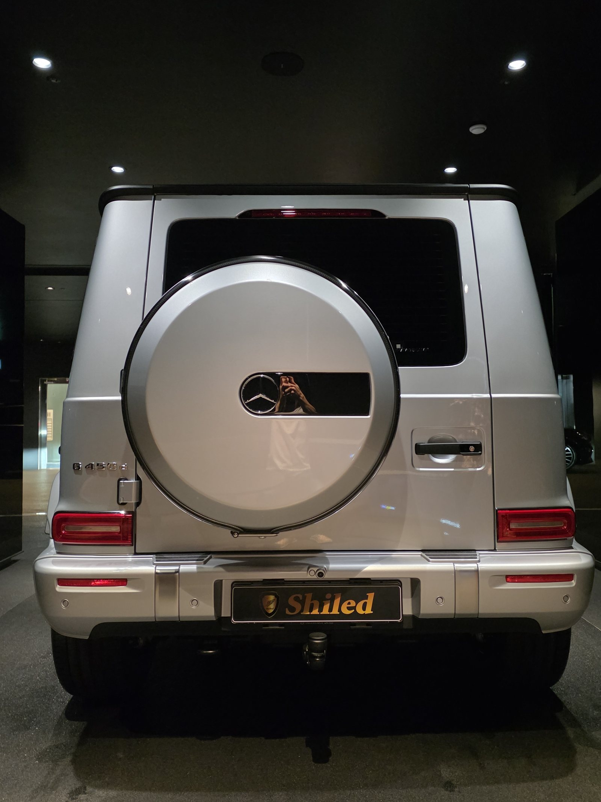
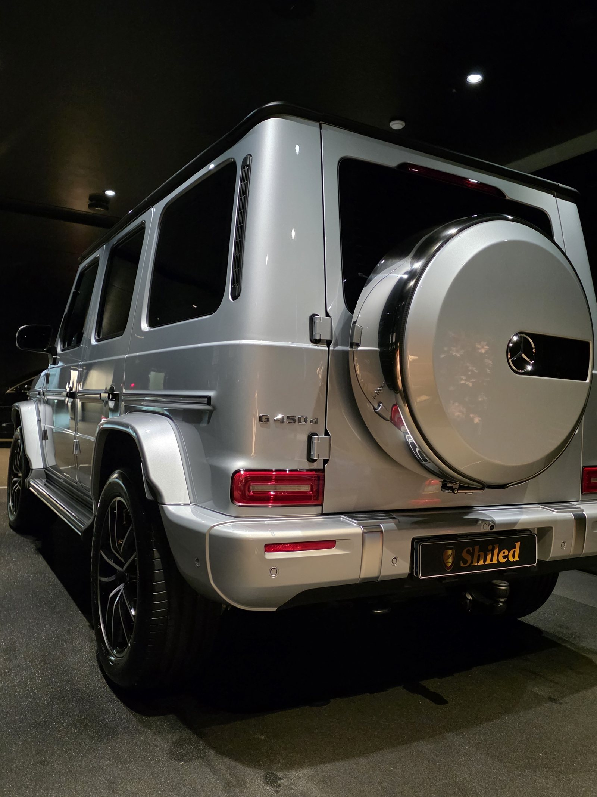
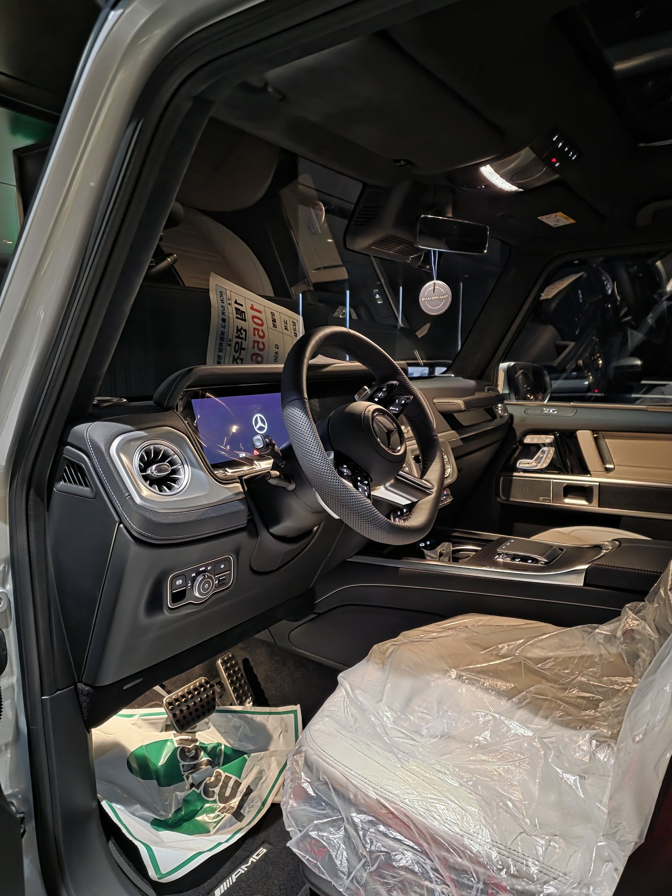
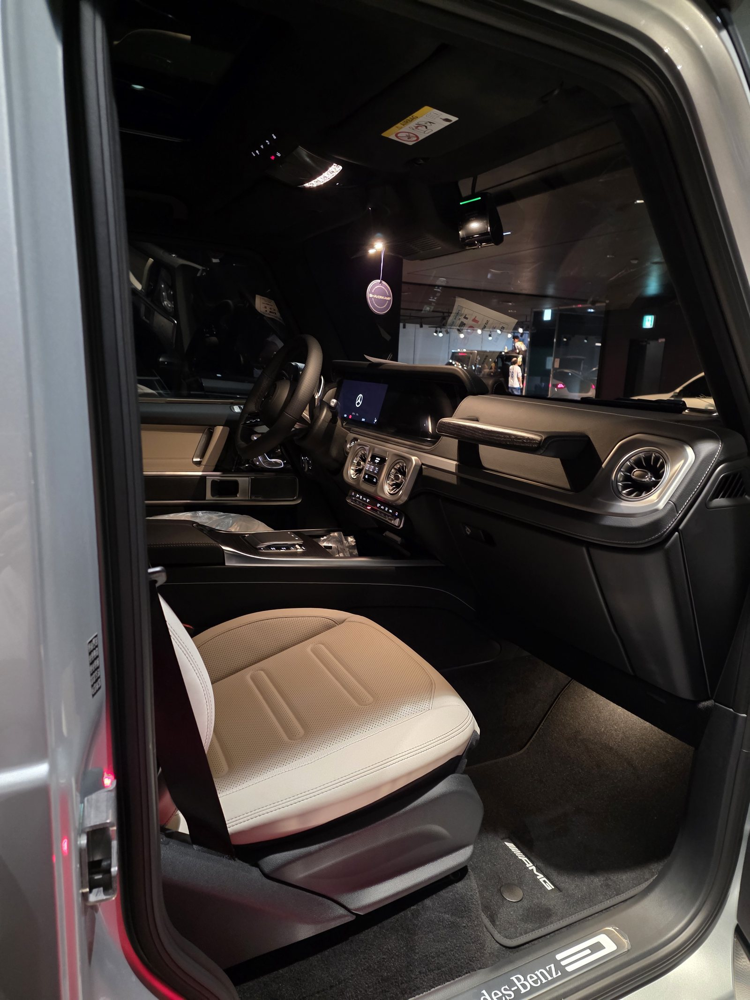
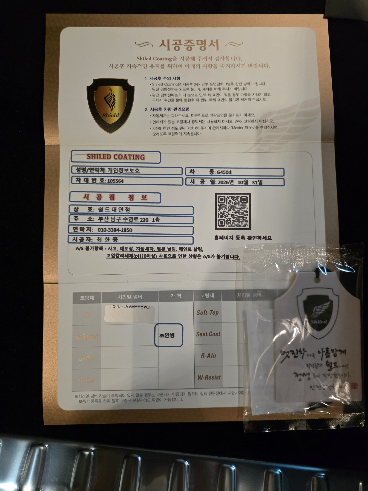

벤츠 G450, 실버입니다.
어두운 쇼룸 조명 아래에서 기록했습니다.
출고 전 F5로 진행한 부산 유리막코팅입니다.

각진 차는 어디가 까다로운가요?
면이 꺾이는 모서리입니다.
G클래스는 보닛도 펜더도 거의 직각으로 만납니다.
둥근 차보다 코팅제가 선을 따라 고이기 쉽습니다.
한 면씩 끊어 바르고 바로 닦아냈습니다.
모서리를 그냥 지나가면 마른 뒤에 흰 줄이 남습니다.



실버는 조명을 어떻게 받나요?
은색은 빛을 넓게 퍼뜨리는 색입니다.
검정처럼 반사가 선명하게 맺히지 않습니다.
그래서 덜 바른 자리를 눈으로 찾기가 더 어렵습니다.
조명 각도를 바꿔가며 면을 한 번 더 훑었습니다.
뒤쪽 스페어타이어 커버는 둥근 면이라 따로 돌려보며 확인했습니다.



기술자의 팁
G클래스는 문손잡이와 문틀 사이, 스페어 커버 테두리에 물이 잘 고입니다. 세차 뒤에 그 틈을 한 번 더 닦아내시면 물 자국이 훨씬 덜 남습니다.
실버 G450에 F5를 올린 이유
F5는 색감의 깊이와 글로시함에 특화된 코팅입니다.
실버는 자칫 밋밋해 보이기 쉬운 색입니다.
F5를 올리면 은색 안쪽의 메탈 입자가 조금 더 또렷하게 살아납니다.
실내는 베이지 가죽에 우드 트림이 들어간 구성입니다.
코팅제는 대표가 직접 개발·제조한 제품입니다.
이번 부산 유리막코팅은 F5 싱글로 진행했습니다.


시공증명서도 함께 드립니다
모든 시공 차량에 시공증명서를 드립니다.
차종·시공일·코팅제 시리얼 번호가 적혀 있고, 홈페이지에 등록해 보증을 받으실 수 있습니다.

차종·시공일·코팅제 시리얼이 기재된 시공증명서
자주 묻는 질문
Q. 실버 차는 코팅 효과가 덜한가요?
A. 덜하지 않습니다. 실버는 잔기스가 눈에 덜 띄는 색이지만, 코팅은 보기 좋아지라고만 하는 게 아니라 오염이 덜 붙게 하려고 올리는 것입니다.
Q. G클래스처럼 각진 차는 뭐가 어렵나요?
A. 면이 직각으로 꺾이는 모서리가 많아 코팅제가 선을 따라 고이기 쉽습니다. 한 면씩 끊어 바르고 바로 닦아내야 자국이 남지 않습니다.
Q. 뒤에 달린 스페어타이어 커버도 코팅하나요?
A. 합니다. 차체와 같은 색으로 도장된 커버라 도장면과 똑같이 다룹니다. 다만 둥근 면이라 조명을 돌려가며 확인해야 덜 바른 자리가 안 생깁니다.
Q. 왜 출고 전에 코팅하나요?
A. 도장면이 가장 깨끗할 때 올린 코팅이 가장 오래갑니다. 운행과 세차로 잔기스가 생기기 전에 입혀두는 것이 핵심입니다.
Q. 쉴드광택 위치와 예약은 어떻게 하나요?
A. 부산 남구 유엔로220 1F 쉴드광택입니다. 예약·상담은 010-3384-1850, 대표 최한중이 직접 상담하고 책임 시공합니다.
새 차일수록 시작점이 다릅니다. 가장 깨끗할 때 입혀두십시오.
제품을 직접 만드는 사람이 직접 시공합니다.
부산에서 신차 유리막코팅을 고민 중이시면 편하게 연락 주십시오.
어떤 차를 타냐보다 어떻게 타냐가 중요합니다~!
시공 중에는 전화를 받지 못할 때가 많습니다.
카카오톡으로 차종과 원하시는 시공을 남겨주시면 확인 후 답변드립니다.
쉴드광택 · 부산 남구 유엔로220 1F · 대표 최한중